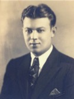

Tunick Family - Family Card
Tunick Family - Family Card
Harry Friedman(9 Jul 1883 - 14 Oct 1923)Rudolph M Godow(6 Jan 1876 - 25 Oct 1953)
Esther Moskowitz(8 Jul 1887 - 4 Nov 1960)Natalie (Natalia, Netty) Fried(25 Aug 1883 - 3 Aug 1971)
m. 31 Aug 1930, Macomb, IL
Benjamin Leon Friedman 

Miriam Godow

b. 27 Dec 1906, Brooklyn, New York City, New York
d. 24 Oct 1983, Rock Island, Illinois
Children
Harry Godow Friedman(29 Jul 1931 - 13 Jan 2013)
Clicking on this symbol (if present)  displays an ancestral graph.
displays an ancestral graph.
To protect privacy, dates and places are omitted for living persons (born after 1926 with no death date).
Additions and corrections may be sent to atunick@roadrunner.com.
displays an ancestral graph.To protect privacy, dates and places are omitted for living persons (born after 1926 with no death date).
Additions and corrections may be sent to atunick@roadrunner.com.